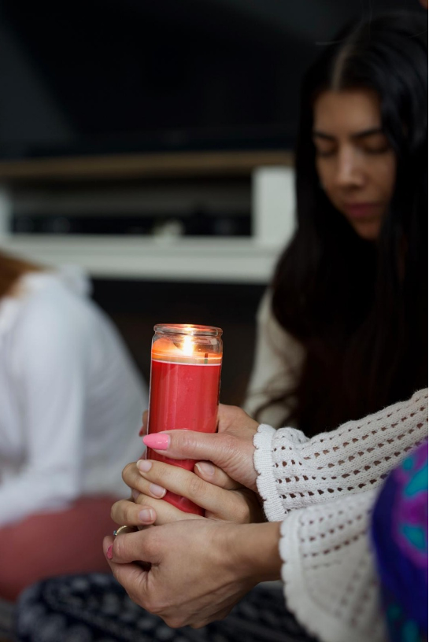

Experiencias de sanación y transformación
"Gracias a quienes permiten compartir su proceso para inspirar a otros".

"Este fin de semana tuve el placer de ser parte de la Ceremonia de Cacao y Fuego, guiada por mi amiga 🤎🔥. Una energía tan hermosa y sanadora llenó el espacio ✨🧿. ¡Las amo con todo mi corazón!
Gracias, mi Yuri, por organizar y guiar esta ceremonia tan linda 🥰😘
Durante la ceremonia de fuego tuve un recuerdo muy especial de mi abuelito, y hoy se cumplen 3 años desde su partida. Qué hermoso regalo sentirlo tan presente en mi corazón. Te amo siempre, papi 🤍🥹"
"Llegué buscando respuestas y encontré paz. La sesión de sanación integral me ayudó a soltar cargas que llevaba años cargando."
"El ritual de fuego fue un antes y un después en mi vida. Logré cerrar un ciclo muy doloroso desde el amor y la luz."
"Una experiencia de conexión profunda. Sentí una claridad mental que no lograba encontrar por mi cuenta. Gracias por el acompañamiento."
"La cirugía con cristales fue algo que nunca imaginé. Sentí físicamente cómo la energía se desbloqueaba en mi pecho. Increíble."
"Amara tiene una luz especial. Me sentí segura y escuchada desde el primer minuto. Su guía ha sido fundamental en mi duelo."
"Los rituales guiados son pura magia. He aprendido a honrar mis emociones y a darme el espacio que merezco."
¿Has vivido una experiencia con Amara by G?
Comparte tu testimonio